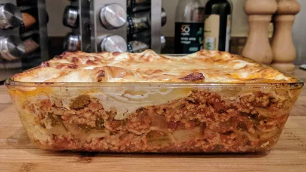

Pork and rosemary lasagne

Quark, a low fat soft cheese, and skimmed milk replace the conventional calorific bechamel sauce in this lean, yet tasty lasagne.
Servings: 4
Total: 1 hr 30 mins
Ingredients
- 1 tbsp olive oil
- 400 g lean minced pork
- 1 onion, finely chopped
- 2 sticks celery, finely chopped
- 1 tsp dried rosemary
- 150 ml white wine
- 425 ml chicken stock
- 2 tbsp tomato puree
- 400 g can chopped tomatoes
- 1 tsp cornflour, mixed to a paste with a little cold water
- 2x 250 g cartons quark
- 250 ml skimmed milk
- freshly ground nutmeg
- 10 dried
- 15 g freshly grated parmesan cheese
Instructions
- Heat the
oil1 tbsp
in a non stick frying pan and fry the pork400 g
until brown and crumbly. Add the onion1
, celery2 sticks
, rosemary1 tsp
and wine150 ml
, simmer for 10 minutes, then stir in the stock425 ml
, puree2 tbsp
and tomatoes400 g can
. Season, cover and simmer for 30 minutes. Stir in the cornflour1 tsp
paste until slightly thickened, then remove from the heat.
- Preheat the oven to 170°C/Gas 5. Mix the
quark2x 250 g cartons
with the milk250 ml
, nutmeg and seasoning. Spoon a third of the meat over the base of a 1.4 litre oblong baking dish. Cover with 2 lasagne sheets10
, avoiding overlapping. Top with a third of the sauce and a little parmesan15 g
, then 2 more lasagne sheets10
. Repeat the layers twice more, omitting the last layer of lasagne and finishing with sauce. Sprinkle with the remaining parmesan15 g
and bake for 30-35 minutes.
-
kcal
425
-
fat
7 g
-
saturates
2 g
-
carbs
45 g
-
sugar
? g
-
fibre
3 g
-
protein
41 g
-
salt
1.03 g
BBC Good Food: Pasta & Noodle Dishes
Short Link
Long Link